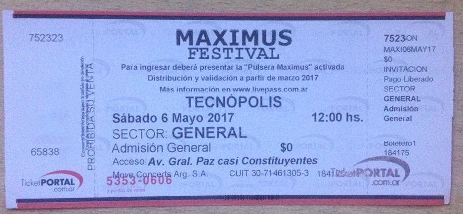
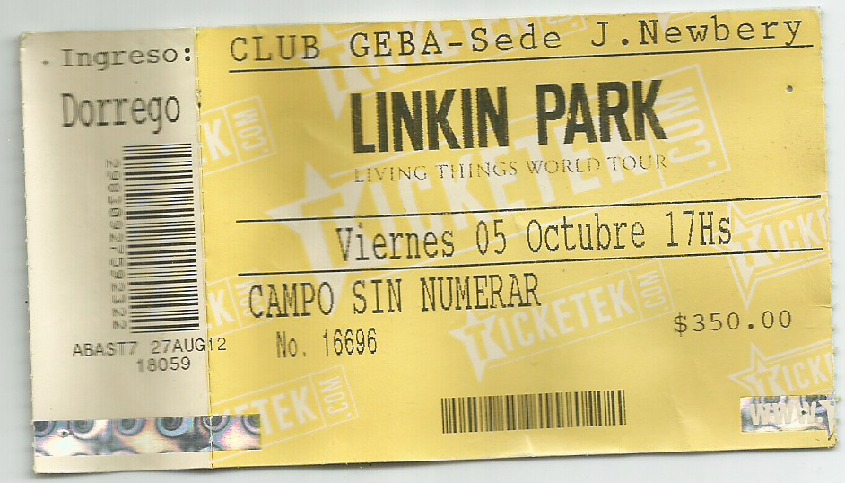
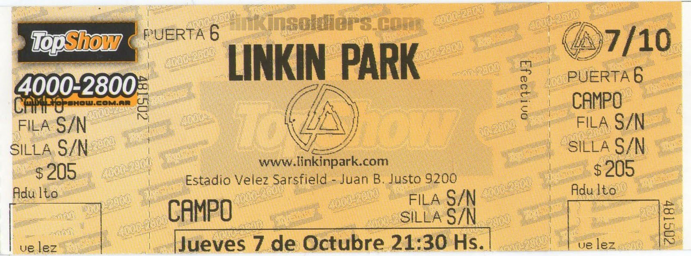

Fanáticos
A los fanáticos de Linkin Park se nos denomina Soldiers, en español: "Soldados". Si bien este sitio es dedicado a Linkin Park y a los fanáticos de Argentina, todos son bienvenidos. Una de las iniciativas mas diferenciadoras en los años 2000, ha sido el LP Underground, en español: "El Linkin Park Subterráneo", el cual fue fundado en 2001 como una forma de conectar directamente con las personas que apoyan la banda y cultivar un lugar de encuentro central para la comunidad de Linkin Park.
Saludo de Mike Shinoda para Linkin Park Argentina
Linkin Park en Argentina (2017) - Ataque 77 como Teloneros

Linkin Park en Argentina (2012)

Linkin Park en Argentina (2010)
